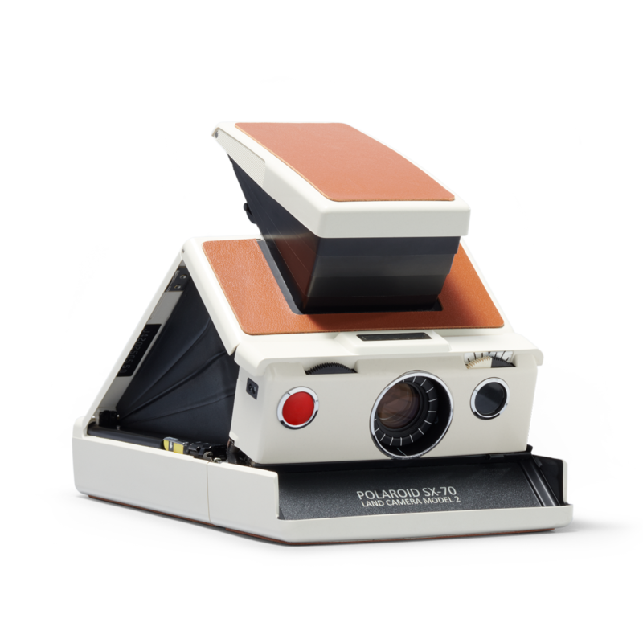

Formatos
En la epoca dorada del Film, cuando aun las camaras digitales aun no se creaban, exisitian muchos formatos
que a lo largo de las decadas han ido desapareciendo poco a poco tanto el formato como camaras de diferentes
formatos.
A dia de hoy siguen existiendo algunos de esos formatos que se pueden encontrar facilmente en la Ciudad de Mexico
o en algun sitio como
Amazon, Mercado Libre
o incluso aun en la calle de
Donceles en la Ciudad de México, tambien hay laboratorios independientes los cuales tambien te pueden ayudar a
conseguir algunos rollos un poco mas especializados.
Tamaños y calidad de imagen
El tamaño del negativo determina en gran medida la calidad de
la fotografía. Cuanto más grandes sean, mayor cantidad de detalles pueden capturar.
Existen numerosas formas de clasificar las películas fotográficas. Éstas son tan diversas que sus
clasificaciones variarán desde el color de la fotografía final, es decir, si el resultado será una foto en
blanco y negro, una foto a color o incluso una fotografía infrarroja, hasta sus formatos, pasando por sus
velocidades, etc.
Una de las clasificaciones más habituales es su agrupación por tamaño. La elección del tamaño del
negativo se realizará en función de la cámara que tengamos ya que éstas sólo aceptan un tipo de formato
a no ser que tengamos un dispositivo aparte llamado Respaldo que permite utilizar un tamaño de negativo
diferente en una cámara con un formato determinado.
Formato 110

En 1972 Eastman Kodak lanzó al mercado un formato muy curioso de película fotográfica, denominada 110,
cuya principal característica era la facilidad con la que se cargaba en las cámaras y su pequeño tamaño.
Esta película venía (y viene) en un chasis que se encajaba en la cámara sin tener que hacer nada más
que abrir la tapa y colocarlo. Ni siquiera había que rebobinar al acabar el carrete.
Este cerrete 110 requería, evidentemente, unas cámaras también especiales, que luego fueron
denominadas de bolsillo (pocket) y de las que las instamatic de Kodak y las de Agfa fueron las
más vendidas.
Ciertamente fue un formato que gozó de bastante aceptación entre los usuarios: fácil de colocar,
las cámaras eran pequeñas; se podían transportar en un bolsillo, y las fotos eran, aunque sin grandes
alardes, muy aceptables para lo que se pretendía de ellas, generalmente un simple recuerdo.
35mm
Dentro del pequeño formato, el negativo de 35 mm es el más extendido y asequible para el público en general.
Es el formato que utilizan la mayoría de las cámaras analógicas comunes y se llama así debido al tamaño
de su cuadro que es de 36 x 24 mm. La mayor ventaja de este formato radica en el tamaño de las cámaras que
lo soportan. Al ser más ligeras y manejables se hizo muy popular a principios del siglo XX entre los
fotoperiodistas. Las grandes fotos de acción y conflicto se han tomado con este tipo de negativo. Dentro de
los negativos de 35 mm encontramos carretes de distintos números de fotogramas. Los de 24 y 36 fotos son los
más extendidos, aunque tambien llegan a salir de 12 fotos.
Formato medio o 120 y formato 220

El negativo de formato medio es, como su nombre indica, más grande que el negativo de 35 mm.
Da una calidad de imagen mucho mayor que su "hermano pequeño" y lo encontramos de dos longitudes
normalmente, en 120 y en 220.
En el primero de ellos podemos tomar 12 fotos y en el de 220 tendremos para 24 fotogramas.
El ancho de la película es invariablemente de 6 cm y, dependiendo de la cámara,
tendremos cuadros de 4,5 x 6, 6 x 6, 6 x 7 y 6 x 9 cm. Este tipo de formato fue el más
utilizado hasta que el 35 mm se extendió. Al dar imágenes con una calidad mayor
(recordemos que cuanto más tamaño tiene el cuadro más haluros de plata tendrá la emulsión y
en consecuencia tendremos más resolución) el medio formato ha sido muy utilizado de modo
profesional para fotografía publicitaria, de moda o ilustración de libros.
Gran Formato o Formato Grande
El gran formato no usa película de carrete como el resto de los formatos.
Las imágenes de gran formato se toman en placas que varían de tamaño desde los 9 x 12 cm
a los 25,4 x 20,3 cm. Como es lógico, la calidad de sus imágenes es superior a todos los
demás formatos, aunque como mayor inconveniente están el peso, la movilidad y el precio de
sus cámaras ya que, además de su calidad, tienen características especiales. Su uso es común
en fotografía científica y museológica.
Pelicula Instantanea

La película instantánea es un tipo de película fotográfica diseñada para ser usada en una
cámara instantánea. La película contiene las sustancias químicas necesarias para revelar y fijar
la foto, además de exponer e iniciar el proceso de revelado, después de hacer una fotografía.
La película instantánea está disponible en tamaños de 24 mm x 36 mm hasta 20 " x 24 ".Los tamaños
de películas más populares entre los consumidores es de 3 ¼ " x 4 ¼ " aproximadamente. Los paquetes
de película integrales contienen una batería plana eléctrica para manejar mecanismos de exposición
/ enfoque, así como motores de eyección de película en la cámara.